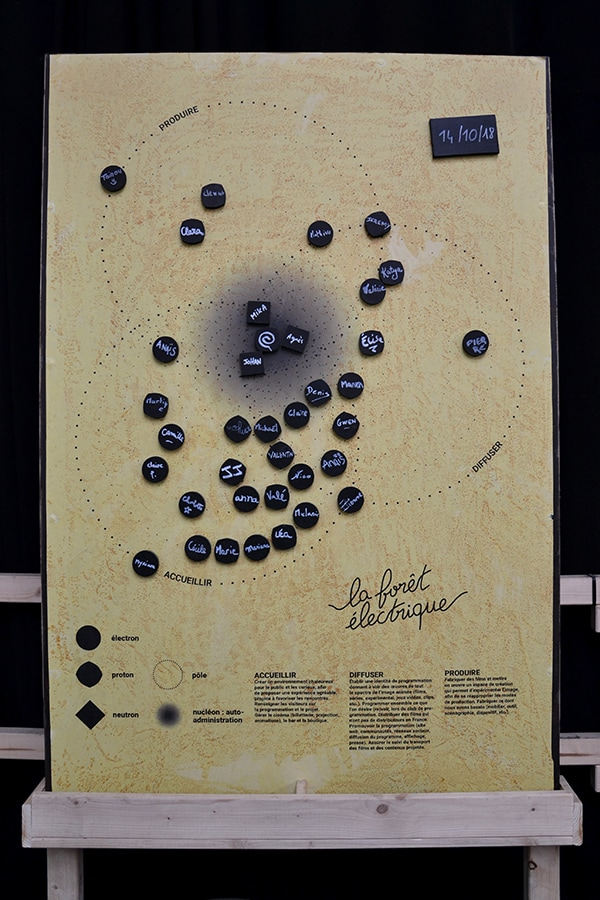
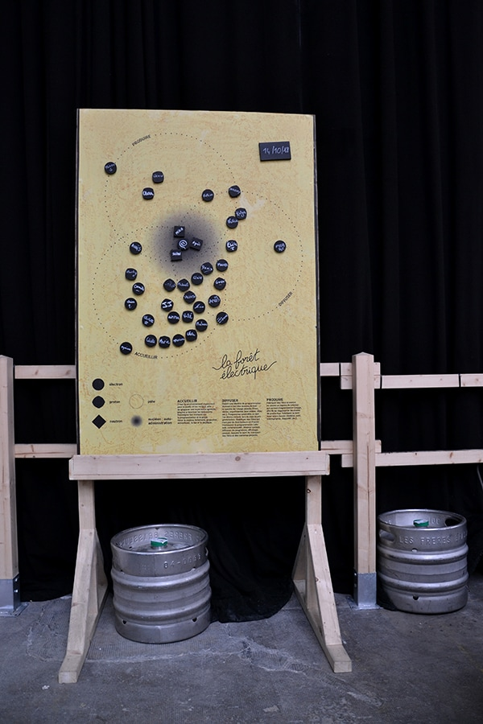
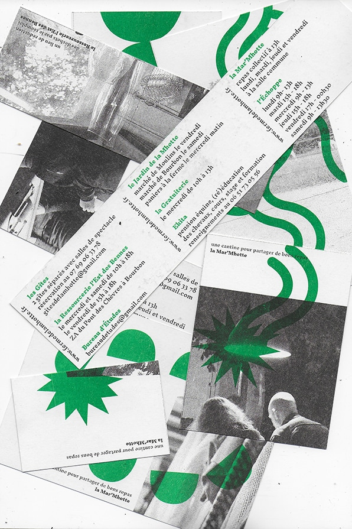
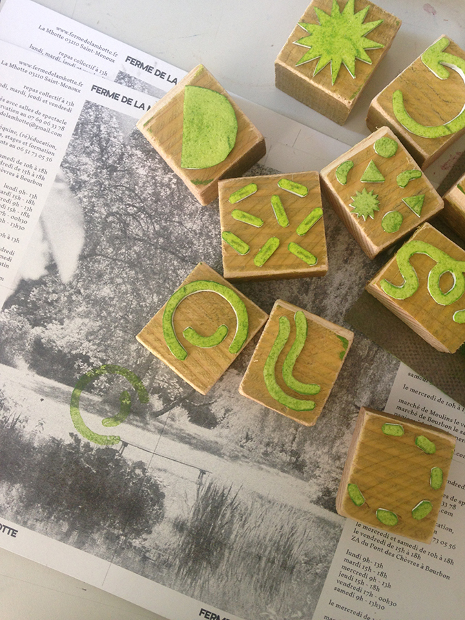
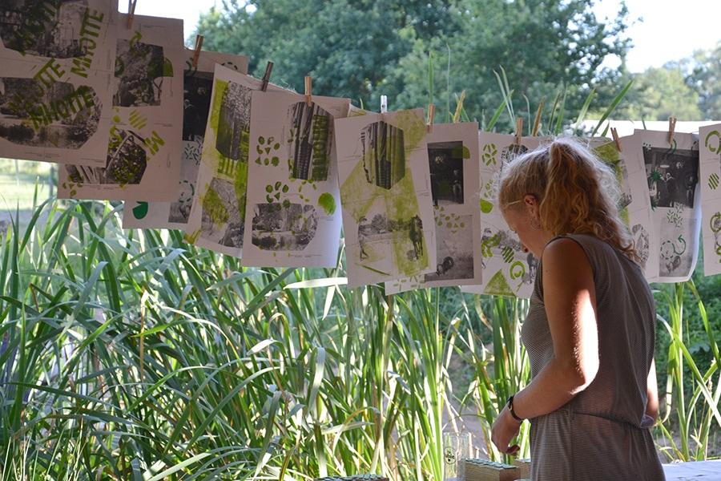
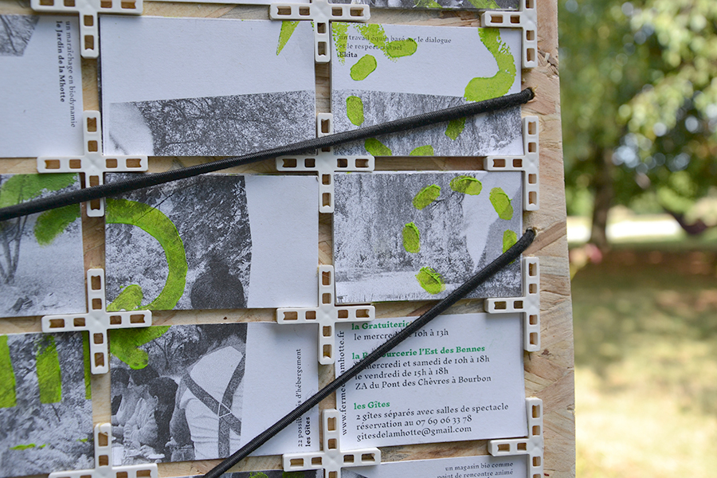
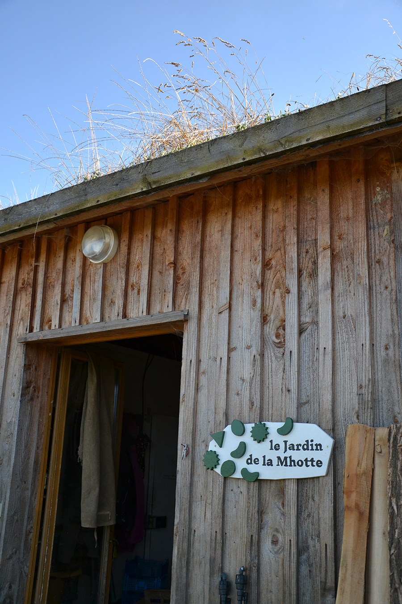
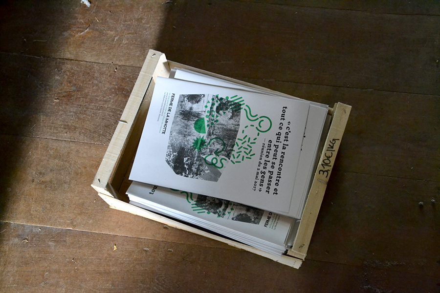
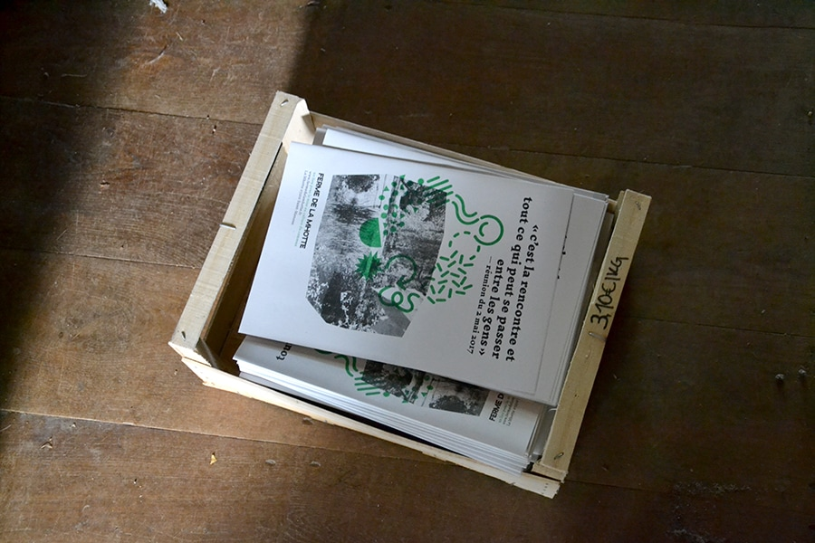
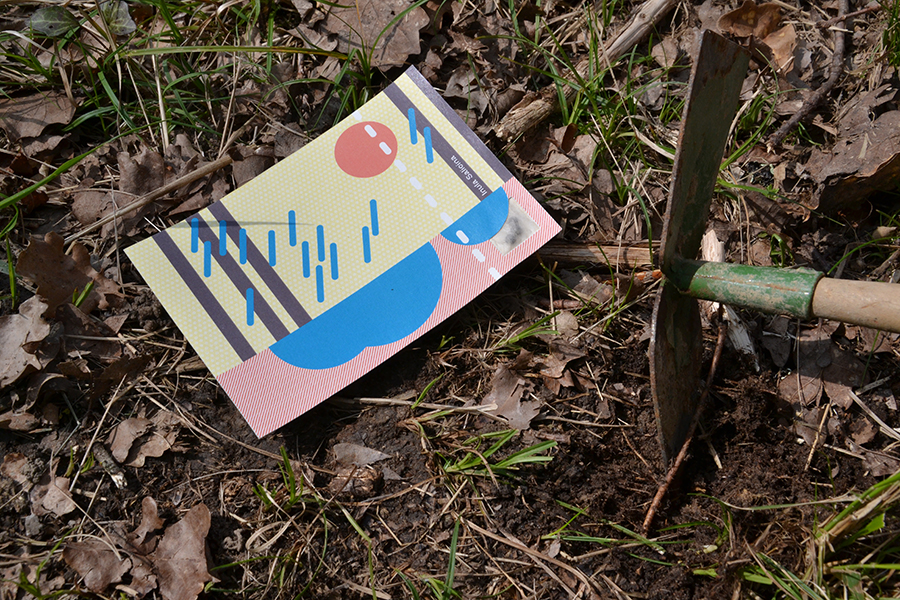

- 
- 
La Forêt Électrique est un cinéma éphémère autogéré
à Toulouse. Elle est en majorité composée de bénévoles :
électrons, protons et neutrons qui gravitent et stabilisent l’atome autour de 3 pôles d’attraction.
La Forêt est organique, elle évolue avec ses membres
qui s’ajoutent et se déplacent en fonction de leur apport,
qu’il soit au niveau de l’accueil, de la diffusion
ou de la production ; et en fonction de leur implication,
de l’électron qui gravitent à l’extérieur de l’atome,
au proton qui stabilise la structure.
Cette affiche aimantée a été conçue comme un outil
pour les membres de la Forêt, afin de visualiser leur rôle,
dans le but de s’organiser et de servir de support
à la médiation de ce lieu, afin de témoigner
de l’écosystème derrière la Forêt Électrique.
— juillet 2018
- 

- 
- 
- 
- 
- 
- 
Identité graphique de la Ferme de la Mhotte conçue
sur place durant 3 mois. L'identité est la cartographie
des liens qui s'établissent entre les différentes sctructures
composant la Ferme, reflet de ce qu'elles sont en pratique.
L’identité s’est concrétisée par un atelier tampon invitant chacun à découvrir et se saisir des différents signes,
afin de tamponner les planches A3, ensuite découpées
pour créer les cartes de visites et les cartes postales.
Le projet a aussi été développé en signalétique
et sur le site internet.
— juillet 2017


- 


Cartes postales créées afin de semer et cultiver
3 espèces rares, trouvées dans le Parc Naturel Régional
de la Sainte-Baume.
Le destinataire est invité à découper
la carte et à planter le tuteur-étiquette pour que le papier
se décompose et libère la graine. Le paysage dessiné
correspond au milieu dans lequel doit évoluer la plante,
sa légende se trouve au verso.
— mars 2017


Outils réalisés pour Camille Latteux, crieur de rue
à Graulhet, ce métier consiste à récolter les messages
des habitants dans le but de les crier le jour du marché
et faire entendre la parole des citoyens.
Mise en place d'une récolte sous forme de jeu
avec des avions en papier et d'une urne porte-avion,
afin de décomplexer la parole des habitants.
Les marques de pliage deviennent alors son identité graphique, les mots rayonnent. Création d'une gazette mensuelle mêlant les informations conventionnelles
de la mairie et la parole des habitants, telle une interface, dans le but de créer un dialogue entre eux.
— janvier 2017


MEMO : Maison de quartier En MOuvement
Système d’affichage autonome de la programmation
de la Maison de Quartier du Petit-Ivry afin de rendre
visible et lisible la richesse des associations présentes.
Le mur se lit tel un tableur, il organise les associations par lieu d'intervention et public visé.
Parcours urbains pour inviter les ivryens à (re)découvrir
leur quartier, en collaboration avec Ne Rougissez Pas.
— juin 2016


Affiche rendant hommage à Coluche pour le triste anniversaire des 30 ans des Restos du Cœur.
— janvier 2016